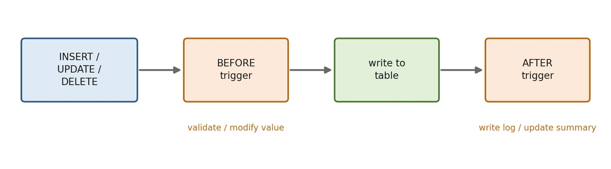

บทที่ 12 · ทริกเกอร์ (Trigger)
แนวคิดของทริกเกอร์ BEFORE / AFTER, OLD / NEW, การตรวจสอบข้อมูล การบันทึกประวัติ กฎธุรกิจข้ามตาราง การรักษาข้อมูลสรุปให้สอดคล้อง และข้อควรระวัง
- อธิบายแนวคิด จังหวะการทำงาน (BEFORE / AFTER) และเหตุการณ์ของทริกเกอร์ได้
- ใช้ OLD และ NEW ในทริกเกอร์ได้ถูกต้อง
- เขียนทริกเกอร์ตรวจสอบ/แก้ไขข้อมูลก่อนบันทึก และบันทึกประวัติการเปลี่ยนแปลงได้
- เขียนทริกเกอร์บังคับกฎธุรกิจที่ต้องอ่านข้อมูลหลายตาราง และรักษาข้อมูลสรุปให้สอดคล้องได้
- เลือกใช้ทริกเกอร์ เทียบกับ Constraint และ Stored Procedure ได้อย่างเหมาะสม
12.1 แนวคิดของทริกเกอร์
ชุดคำสั่งที่ระบบเรียกอัตโนมัติเมื่อเกิด INSERT / UPDATE / DELETE กับตาราง — ผู้ใช้เรียกเองไม่ได้ เหมาะกับกฎที่ต้องมีผลทุกครั้ง ไม่ว่าคำสั่งมาจากช่องทางใด

| เหตุการณ์ | OLD | NEW | ใช้บ่อยเพื่อ |
|---|---|---|---|
| INSERT | ✘ | ✔ | ตรวจ/กำหนดค่าก่อนบันทึก |
| UPDATE | ✔ | ✔ | บันทึกประวัติค่าเดิม |
| DELETE | ✔ | ✘ | เก็บข้อมูลที่ถูกลบ |
BEFORE / AFTER × INSERT / UPDATE / DELETE = 6 รูปแบบ
12.2 โครงสร้างคำสั่ง CREATE TRIGGER
DELIMITER $$
CREATE TRIGGER ชื่อทริกเกอร์
{BEFORE | AFTER} {INSERT | UPDATE | DELETE} ON ชื่อตาราง
FOR EACH ROW
[{FOLLOWS | PRECEDES} ทริกเกอร์อื่น]
BEGIN
-- อ้างถึงค่าเดิมด้วย OLD.คอลัมน์ และค่าใหม่ด้วย NEW.คอลัมน์
END $$
DELIMITER ;- FOR EACH ROW — ทำงานทีละแถว เช่น UPDATE กระทบ 10 แถว ทริกเกอร์ทำงาน 10 ครั้ง
- ตั้งชื่อ
tg_ตาราง_จังหวะ_เหตุการณ์เช่นtg_enroll_before_insertจะรู้ทันทีว่าทำงานเมื่อใด - ใน BEFORE แก้ค่า
NEW.คอลัมน์ได้ (เปลี่ยนค่าก่อนบันทึก) ใน AFTER แก้ไม่ได้ เพราะบันทึกไปแล้ว - ห้ามแก้ไขตารางเดียวกับที่กระตุ้นทริกเกอร์ (Error 1442) และห้ามใช้ COMMIT / ROLLBACK ในทริกเกอร์
DELIMITER $$
CREATE TRIGGER tg_subject_before_insert
BEFORE INSERT ON subject
FOR EACH ROW
BEGIN
SET NEW.subid = UPPER(TRIM(NEW.subid));
SET NEW.name = TRIM(NEW.name);
END $$
DELIMITER ;INSERT INTO subject (subid, name, credit, major) VALUES (' cs011 ', ' Cloud Computing ', 3, 'CS');| subid | name | credit | major | pre |
|---|---|---|---|---|
| CS011 | Cloud Computing | 3 | CS | NULL |
12.3 ทริกเกอร์ BEFORE — ตรวจสอบและแก้ไขข้อมูลก่อนบันทึก
DELIMITER $$
CREATE TRIGGER tg_student_before_insert
BEFORE INSERT ON student
FOR EACH ROW
BEGIN
IF NEW.name IS NULL THEN
SIGNAL SQLSTATE '45000'
SET MESSAGE_TEXT = 'ต้องระบุชื่อนิสิต';
END IF;
IF NEW.major IS NULL THEN
SET NEW.major = 'Undeclared';
END IF;
END $$
DELIMITER ;INSERT INTO student (stdid, major) VALUES ('80010', 'CS');INSERT INTO student (stdid, name) VALUES ('80011', 'Inosuke');| stdid | name | major | gpa | birthday |
|---|---|---|---|---|
| 80011 | Inosuke | Undeclared | NULL | NULL |
12.4 ทริกเกอร์ AFTER — บันทึกประวัติการเปลี่ยนแปลง (Audit Log)
CREATE TABLE grade_log (
log_id INT AUTO_INCREMENT PRIMARY KEY,
secid INT,
stdid VARCHAR(10),
old_grade CHAR(1),
new_grade CHAR(1),
changed_by VARCHAR(50),
changed_at DATETIME
);
DELIMITER $$
CREATE TRIGGER tg_enroll_after_update
AFTER UPDATE ON enroll
FOR EACH ROW
BEGIN
IF NOT (OLD.grade <=> NEW.grade) THEN
INSERT INTO grade_log (secid, stdid, old_grade, new_grade, changed_by, changed_at)
VALUES (OLD.secid, OLD.stdid, OLD.grade, NEW.grade, CURRENT_USER(), NOW());
END IF;
END $$
DELIMITER ;UPDATE enroll SET grade = 'B' WHERE secid = 34 AND stdid = '70033'; UPDATE enroll SET grade = 'D' WHERE secid = 1 AND stdid = '60006';
| log_id | secid | stdid | old_grade | new_grade | changed_by |
|---|---|---|---|---|---|
| 1 | 34 | 70033 | NULL | B | root@localhost |
| 2 | 1 | 60006 | F | D | root@localhost |
NULL-safe equal: คืนค่าจริงเมื่อทั้งสองฝั่งเป็น NULL — จำเป็นเพราะเกรดเดิมอาจเป็น NULL (เช่น 70033 ใน secid 34) ถ้าใช้ = จะได้ Unknown และไม่ถูกบันทึก
12.5 กฎธุรกิจที่ต้องอ่านข้อมูลหลายตาราง
CHECK บังคับกฎนี้ไม่ได้ เพราะต้องอ่านข้อมูลจากหลายตาราง
DELIMITER $$
CREATE TRIGGER tg_enroll_check_credit
BEFORE INSERT ON enroll
FOR EACH ROW
BEGIN
DECLARE v_term VARCHAR(6);
DECLARE v_current INT DEFAULT 0;
DECLARE v_new INT DEFAULT 0;
SELECT sec.term, sub.credit INTO v_term, v_new
FROM section sec INNER JOIN subject sub ON sec.subid = sub.subid
WHERE sec.secid = NEW.secid;
SELECT IFNULL(SUM(sub.credit), 0) INTO v_current
FROM enroll e
INNER JOIN section sec ON e.secid = sec.secid
INNER JOIN subject sub ON sec.subid = sub.subid
WHERE e.stdid = NEW.stdid AND sec.term = v_term;
IF (v_current + v_new) > 22 THEN
SIGNAL SQLSTATE '45000'
SET MESSAGE_TEXT = 'ลงทะเบียนเกิน 22 หน่วยกิตต่อภาคเรียน';
END IF;
END $$
DELIMITER ;ทดสอบ: เปิด 6 กลุ่มเรียนในภาค 2026-2 (วิชา 4+6+4+3+3+3 = 23 หน่วยกิต) แล้วให้นิสิต 60015 ลงทีละกลุ่ม
INSERT INTO section (subid, lecid, term) VALUES
('CS007','t02','2026-2'), ('CS009','t02','2026-2'), ('MA002','t05','2026-2'),
('CS001','t01','2026-2'), ('CS008','t03','2026-2'), ('PH001','t16','2026-2');
INSERT INTO enroll (secid, stdid)
SELECT secid, '60015' FROM section WHERE term = '2026-2' AND subid <> 'PH001';| secid | subid | credit |
|---|---|---|
| 53 | CS007 | 4 |
| 54 | CS009 | 6 |
| 55 | MA002 | 4 |
| 56 | CS001 | 3 |
| 57 | CS008 | 3 |
INSERT INTO enroll (secid, stdid) SELECT secid, '60015' FROM section WHERE term = '2026-2' AND subid = 'PH001';
SHOW TRIGGERS;
| Trigger | Event | Table | Statement | Timing | Created | sql_mode | Definer | character_set_client | collation_connection | Database Collation |
|---|---|---|---|---|---|---|---|---|---|---|
| tg_enroll_check_credit | INSERT | enroll | BEGIN DECLARE v_term VARCHAR(6); DECLARE v_current INT DEFAULT 0; DECLARE v_new INT DEFAULT 0; SELECT sec.term, sub.credit INTO v_term, v_new FROM section sec INNER JOIN subject sub ON sec.subid = sub.subid WHERE sec.secid = NEW.secid; SELECT IFNULL(SUM(sub.credit), 0) INTO v_current FROM enroll e INNER JOIN section sec ON e.secid = sec.secid INNER JOIN subject sub ON sec.subid = sub.subid WHERE e.stdid = NEW.stdid AND sec.term = v_term; IF (v_current + v_new) > 22 THEN SIGNAL SQLSTATE '45000' SET MESSAGE_TEXT = 'ลงทะเบียนเกิน 22 หน่วยกิตต่อภาคเรียน'; END IF; END | BEFORE | 2026-10-03 18:53:20.900000 | ERROR_FOR_DIVISION_BY_ZERO,NO_ENGINE_SUBSTITUTION,NO_ZERO_DATE,NO_ZERO_IN_DATE,ONLY_FULL_GROUP_BY,STRICT_TRANS_TABLES | root@localhost | utf8mb4 | utf8mb4_unicode_ci | utf8mb4_unicode_ci |
| tg_enroll_after_update | UPDATE | enroll | BEGIN IF NOT (OLD.grade <=> NEW.grade) THEN INSERT INTO grade_log (secid, stdid, old_grade, new_grade, changed_by, changed_at) VALUES (OLD.secid, OLD.stdid, OLD.grade, NEW.grade, CURRENT_USER(), NOW()); END IF; END | AFTER | 2026-10-03 18:53:20.900000 | ERROR_FOR_DIVISION_BY_ZERO,NO_ENGINE_SUBSTITUTION,NO_ZERO_DATE,NO_ZERO_IN_DATE,ONLY_FULL_GROUP_BY,STRICT_TRANS_TABLES | root@localhost | utf8mb4 | utf8mb4_unicode_ci | utf8mb4_unicode_ci |
| tg_student_before_insert | INSERT | student | BEGIN IF NEW.name IS NULL THEN SIGNAL SQLSTATE '45000' SET MESSAGE_TEXT = 'ต้องระบุชื่อนิสิต'; END IF; IF NEW.major IS NULL THEN SET NEW.major = 'Undeclared'; END IF; END | BEFORE | 2026-10-03 18:53:20.890000 | ERROR_FOR_DIVISION_BY_ZERO,NO_ENGINE_SUBSTITUTION,NO_ZERO_DATE,NO_ZERO_IN_DATE,ONLY_FULL_GROUP_BY,STRICT_TRANS_TABLES | root@localhost | utf8mb4 | utf8mb4_unicode_ci | utf8mb4_unicode_ci |
| tg_subject_before_insert | INSERT | subject | BEGIN SET NEW.subid = UPPER(TRIM(NEW.subid)); SET NEW.name = TRIM(NEW.name); END | BEFORE | 2026-10-03 18:53:20.890000 | ERROR_FOR_DIVISION_BY_ZERO,NO_ENGINE_SUBSTITUTION,NO_ZERO_DATE,NO_ZERO_IN_DATE,ONLY_FULL_GROUP_BY,STRICT_TRANS_TABLES | root@localhost | utf8mb4 | utf8mb4_unicode_ci | utf8mb4_unicode_ci |
12.6 รักษาข้อมูลสรุปให้สอดคล้องอัตโนมัติ
บางครั้งเราเลือกดีนอร์มัลไลซ์ (บทที่ 3) เก็บค่าสรุปไว้ในตาราง เพื่อให้อ่านเร็ว เช่น จำนวนนิสิตในแต่ละกลุ่มเรียน — ความเสี่ยงคือค่าไม่ตรงกับข้อมูลจริง ทริกเกอร์ช่วยปรับค่าให้อัตโนมัติทุกครั้งที่มีการเปลี่ยนแปลง
ALTER TABLE section ADD COLUMN n_student INT NOT NULL DEFAULT 0;
UPDATE section sec
SET n_student =
(SELECT COUNT(*)
FROM enroll e
WHERE e.secid = sec.secid);
SELECT secid, subid, term, n_student FROM section WHERE term = '2026-1' OR secid <= 3;| secid | subid | term | n_student |
|---|---|---|---|
| 1 | CS001 | 2023-1 | 5 |
| 2 | CS004 | 2023-1 | 4 |
| 3 | CS005 | 2023-1 | 0 |
| 51 | CS004 | 2026-1 | 2 |
| 52 | CS009 | 2026-1 | 0 |
DELIMITER $$
CREATE TRIGGER tg_enroll_after_insert_count
AFTER INSERT ON enroll
FOR EACH ROW
BEGIN
UPDATE section SET n_student = n_student + 1 WHERE secid = NEW.secid;
END $$
CREATE TRIGGER tg_enroll_after_delete_count
AFTER DELETE ON enroll
FOR EACH ROW
BEGIN
UPDATE section SET n_student = n_student - 1 WHERE secid = OLD.secid;
END $$
DELIMITER ;INSERT INTO enroll (secid, stdid) VALUES (52, '60014'), (52, '60016');
DELETE FROM enroll WHERE secid = 52 AND stdid = '60016';
SELECT sec.secid, sec.n_student AS stored_count,
(SELECT COUNT(*)
FROM enroll e
WHERE e.secid = sec.secid) AS real_count
FROM section sec WHERE secid = 52;| secid | stored_count | real_count |
|---|---|---|
| 52 | 1 | 1 |
วิว (บทที่ 7) คำนวณใหม่ทุกครั้ง — ถูกต้องเสมอแต่ช้าเมื่อข้อมูลมาก ส่วนเก็บค่าไว้ + ทริกเกอร์ — อ่านเร็วมากแต่ซับซ้อนกว่า และถ้ามีคนปิดทริกเกอร์หรือแก้ข้อมูลด้วยวิธีอื่น ค่าอาจไม่ตรง ควรมีคำสั่งตรวจ/คำนวณใหม่ (เช่นขั้นที่ 1) ไว้ใช้เป็นระยะ
12.7 การจัดการทริกเกอร์ และข้อควรระวัง
| ประเด็น | Stored Procedure | Trigger |
|---|---|---|
| เรียกใช้ | ผู้ใช้ CALL เอง | อัตโนมัติเมื่อเกิดเหตุการณ์ |
| พารามิเตอร์ | รับได้ | ไม่ได้ ใช้ OLD / NEW แทน |
| COMMIT / ROLLBACK | ใช้ได้ | ใช้ไม่ได้ (อยู่ในทรานแซกชันของคำสั่งที่กระตุ้น) |
| เหมาะกับ | งานที่สั่งทำเป็นครั้งคราว | กฎที่ต้องบังคับทุกครั้ง |
ทริกเกอร์ทำงานเบื้องหลัง ตามหาสาเหตุปัญหายาก และถ้าทริกเกอร์กระตุ้นทริกเกอร์อื่นต่อกัน อาจวนไม่รู้จบ — ใช้เฉพาะกฎที่ CHECK หรือ FK ทำไม่ได้
ห้ามแก้ตารางเดียวกับที่กระตุ้นทริกเกอร์ (Error 1442)
DELIMITER $$
CREATE TRIGGER tg_student_bad
AFTER INSERT ON student
FOR EACH ROW
BEGIN
UPDATE student SET gpa = 0 WHERE stdid = NEW.stdid;
END $$
DELIMITER ;INSERT INTO student (stdid, name, major) VALUES ('80020', 'Tanjiro', 'CS');DROP TRIGGER tg_student_bad;
จงเขียนทริกเกอร์ที่ป้องกันไม่ให้ลดเงินเดือนอาจารย์ (ค่าใหม่น้อยกว่าค่าเดิมให้แจ้ง error) แล้วทดสอบ
DELIMITER $$
CREATE TRIGGER tg_lecturer_no_cut
BEFORE UPDATE ON lecturer
FOR EACH ROW
BEGIN
IF NEW.salary < OLD.salary THEN
SIGNAL SQLSTATE '45000'
SET MESSAGE_TEXT = 'ห้ามลดเงินเดือน';
END IF;
END $$
DELIMITER ;UPDATE lecturer SET salary = 30000 WHERE lecid = 't01';
จงเขียนทริกเกอร์ที่บันทึกข้อมูลนิสิตที่ถูกลบลงตาราง student_deleted_log พร้อมชื่อผู้ลบและเวลา
CREATE TABLE student_deleted_log (
stdid VARCHAR(10),
name VARCHAR(50),
major VARCHAR(20),
deleted_by VARCHAR(50),
deleted_at DATETIME
);
DELIMITER $$
CREATE TRIGGER tg_student_after_delete
AFTER DELETE ON student
FOR EACH ROW
BEGIN
INSERT INTO student_deleted_log
VALUES (OLD.stdid, OLD.name, OLD.major, CURRENT_USER(), NOW());
END $$
DELIMITER ;
DELETE FROM student WHERE stdid = '80011';| stdid | name | major | deleted_by |
|---|---|---|---|
| 80011 | Inosuke | Undeclared | root@localhost |
จงเขียนทริกเกอร์จำกัดจำนวนนิสิตในกลุ่มเรียนหนึ่งไม่ให้เกิน 40 คน
DELIMITER $$
CREATE TRIGGER tg_enroll_max40
BEFORE INSERT ON enroll
FOR EACH ROW
BEGIN
IF (SELECT COUNT(*) FROM enroll WHERE secid = NEW.secid) >= 40 THEN
SIGNAL SQLSTATE '45000'
SET MESSAGE_TEXT = 'กลุ่มเรียนนี้เต็มแล้ว (40 คน)';
END IF;
END $$
DELIMITER ;ตารางหนึ่งมีทริกเกอร์ BEFORE INSERT ได้หลายตัว (MySQL 5.7+) ทำงานตามลำดับที่สร้าง หรือกำหนดด้วย FOLLOWS / PRECEDES
คำถามท้ายบท
- เขียนทริกเกอร์
- เขียนทริกเกอร์ป้องกันไม่ให้ลดเงินเดือนอาจารย์ (BEFORE UPDATE + SIGNAL)เฉลย
DELIMITER $$ CREATE TRIGGER tg_lecturer_no_cut BEFORE UPDATE ON lecturer FOR EACH ROW BEGIN IF NEW.salary < OLD.salary THEN SIGNAL SQLSTATE '45000' SET MESSAGE_TEXT = 'ห้ามลดเงินเดือน'; END IF; END $$ DELIMITER ;ทดสอบ — ลดเงินเดือนUPDATE lecturer SET salary = 30000 WHERE lecid = 't01';
✖ Error Code: 1644. ห้ามลดเงินเดือนทดสอบ — ขึ้นเงินเดือนยังทำได้UPDATE lecturer SET salary = salary + 1000 WHERE lecid = 't01';
✔ Query OK · 1 row(s) affected▸ ข้อมูลหลังรันคำสั่ง (1 แถว)lecid salary t01 41000 - เขียนทริกเกอร์ที่แปลงเกรดเป็นตัวพิมพ์ใหญ่อัตโนมัติก่อนบันทึก (เช่น 'a' → 'A') (SET NEW.grade = UPPER(NEW.grade))
ต้องเป็น BEFORE จึงแก้ค่า NEW ได้ก่อนบันทึก และควรมีทั้งตอน INSERT และ UPDATE
เฉลยDELIMITER $$ CREATE TRIGGER tg_enroll_grade_upper_ins BEFORE INSERT ON enroll FOR EACH ROW BEGIN SET NEW.grade = UPPER(NEW.grade); END $$ CREATE TRIGGER tg_enroll_grade_upper_upd BEFORE UPDATE ON enroll FOR EACH ROW BEGIN SET NEW.grade = UPPER(NEW.grade); END $$ DELIMITER ;เฉลยINSERT INTO enroll VALUES (1, '60016', 'b'); UPDATE enroll SET grade = 'c' WHERE secid = 1 AND stdid = '60001';
✔ Query OK · 1 row(s) affected▸ ข้อมูลหลังรันคำสั่ง (2 แถว)secid stdid grade 1 60001 C 1 60016 B - เขียนทริกเกอร์บันทึกข้อมูลนิสิตที่ถูกลบลงตาราง student_deleted_log พร้อมชื่อผู้ลบและเวลา (AFTER DELETE + OLD)เฉลย
CREATE TABLE student_deleted_log ( stdid VARCHAR(10), name VARCHAR(50), major VARCHAR(20), deleted_by VARCHAR(50), deleted_at DATETIME ); DELIMITER $$ CREATE TRIGGER tg_student_after_delete AFTER DELETE ON student FOR EACH ROW BEGIN INSERT INTO student_deleted_log VALUES (OLD.stdid, OLD.name, OLD.major, CURRENT_USER(), NOW()); END $$ DELIMITER ;เฉลยDELETE FROM student WHERE stdid = '60016';
✔ Query OK · 1 row(s) affected▸ ข้อมูลหลังรันคำสั่ง (1 แถว)stdid name major deleted_by 60016 Mello Physics root@localhost ใช้ OLD เพราะเหตุการณ์ DELETE มีเฉพาะข้อมูลเดิม และใช้ AFTER เพื่อบันทึกเมื่อการลบสำเร็จแล้วเท่านั้น
- เขียนทริกเกอร์บันทึกประวัติการแก้เกรด และอธิบายว่าทำไมต้องใช้
<=>แทน=(NULL-safe equal)เฉลยCREATE TABLE grade_log ( log_id INT AUTO_INCREMENT PRIMARY KEY, secid INT, stdid VARCHAR(10), old_grade CHAR(1), new_grade CHAR(1), changed_by VARCHAR(50), changed_at DATETIME ); DELIMITER $$ CREATE TRIGGER tg_enroll_after_update AFTER UPDATE ON enroll FOR EACH ROW BEGIN IF NOT (OLD.grade <=> NEW.grade) THEN INSERT INTO grade_log (secid, stdid, old_grade, new_grade, changed_by, changed_at) VALUES (OLD.secid, OLD.stdid, OLD.grade, NEW.grade, CURRENT_USER(), NOW()); END IF; END $$ DELIMITER ;เฉลยUPDATE enroll SET grade = 'B' WHERE secid = 34 AND stdid = '70033'; -- เดิมเป็น NULL UPDATE enroll SET grade = 'D' WHERE secid = 1 AND stdid = '60006';
✔ Query OK · 1 row(s) affected▸ ข้อมูลหลังรันคำสั่ง (2 แถว)secid stdid old_grade new_grade 34 70033 NULL B 1 60006 F D ถ้าเกรดเดิมเป็น NULL (ยังไม่มีเกรด)
OLD.grade <> NEW.gradeได้ผลเป็น UNKNOWN ซึ่ง IF ถือว่าไม่จริง การให้เกรดครั้งแรกจึงไม่ถูกบันทึก ส่วน<=>(NULL-safe equal) เปรียบเทียบ NULL ได้: NULL <=> NULL เป็นจริง และ NULL <=> 'B' เป็นเท็จ - เขียนทริกเกอร์จำกัดจำนวนนิสิตในกลุ่มเรียนหนึ่งไม่ให้เกิน 40 คน (BEFORE INSERT ON enroll)เฉลย
DELIMITER $$ CREATE TRIGGER tg_enroll_max40 BEFORE INSERT ON enroll FOR EACH ROW BEGIN IF (SELECT COUNT(*) FROM enroll WHERE secid = NEW.secid) >= 40 THEN SIGNAL SQLSTATE '45000' SET MESSAGE_TEXT = 'กลุ่มเรียนนี้เต็มแล้ว (40 คน)'; END IF; END $$ DELIMITER ;ใช้ BEFORE เพื่อปฏิเสธก่อนบันทึก — ในระบบที่มีผู้ใช้พร้อมกันมาก ควรทำร่วมกับการล็อก (บทที่ 9) ไม่เช่นนั้นสองคนอาจนับได้ 39 พร้อมกันแล้วลงได้ทั้งคู่
- อธิบายว่าทำไมกฎ “ต้องผ่านวิชาบังคับก่อนจึงลงวิชาถัดไปได้” บังคับด้วย CHECK ไม่ได้ แล้วเขียนทริกเกอร์บังคับกฎนี้ (ข้อมูลหลายตาราง)
CHECK ตรวจได้เฉพาะค่าในแถวที่กำลังบันทึก แต่กฎนี้ต้องอ่าน section (วิชาของกลุ่ม) subject (วิชาบังคับก่อน) และแถวอื่นใน enroll (ประวัติการเรียน) จึงต้องใช้ทริกเกอร์
เฉลยDELIMITER $$ CREATE TRIGGER tg_enroll_check_pre BEFORE INSERT ON enroll FOR EACH ROW BEGIN DECLARE v_pre VARCHAR(10); SELECT sub.pre INTO v_pre FROM section sec JOIN subject sub ON sec.subid = sub.subid WHERE sec.secid = NEW.secid; IF v_pre IS NOT NULL AND NOT EXISTS ( SELECT 1 FROM enroll e JOIN section s ON e.secid = s.secid WHERE e.stdid = NEW.stdid AND s.subid = v_pre AND e.grade IN ('A', 'B', 'C', 'D')) THEN SIGNAL SQLSTATE '45000' SET MESSAGE_TEXT = 'ยังไม่ผ่านวิชาบังคับก่อน'; END IF; END $$ DELIMITER ;60015 ยังไม่เคยผ่าน CS004 → ลง CS009 (secid 52) ไม่ได้INSERT INTO enroll (secid, stdid) VALUES (52, '60015');
✖ Error Code: 1644. ยังไม่ผ่านวิชาบังคับก่อน60004 เคยได้ A วิชา CS004 → ลงได้INSERT INTO enroll (secid, stdid) VALUES (52, '60004');
✔ Query OK · 1 row(s) affected▸ ข้อมูลหลังรันคำสั่ง (1 แถว)secid stdid grade 52 60004 NULL - แนวคิดและข้อควรระวัง
- จงอธิบายความแตกต่างของ BEFORE และ AFTER และระบุว่า NEW / OLD ใช้ได้ในเหตุการณ์ใดบ้าง (INSERT มีแต่ NEW, DELETE มีแต่ OLD)
BEFORE ทำงานก่อนบันทึก ใช้ตรวจสอบ/ปฏิเสธ (SIGNAL) หรือแก้ค่า NEW ได้ · AFTER ทำงานหลังบันทึกสำเร็จ ใช้บันทึก log หรือปรับตารางอื่น แก้ค่า NEW ไม่ได้แล้ว
- INSERT — มีเฉพาะ NEW
- UPDATE — มีทั้ง OLD (ค่าก่อนแก้) และ NEW (ค่าหลังแก้)
- DELETE — มีเฉพาะ OLD
- เหตุใดทริกเกอร์จึงแก้ตารางเดียวกับที่กระตุ้นทริกเกอร์ไม่ได้ และควรแก้ปัญหาอย่างไร (Error 1442 → ใช้ BEFORE + SET NEW)
MySQL ห้ามทริกเกอร์ INSERT/UPDATE/DELETE ตารางที่กำลังถูกแก้อยู่ (Error 1442) เพราะอาจทำให้เกิดการเรียกทริกเกอร์วนซ้ำไม่รู้จบและข้อมูลไม่แน่นอน ถ้าต้องการเปลี่ยนค่าในแถวที่กำลังบันทึก ให้ใช้ทริกเกอร์ BEFORE แล้ว
SET NEW.คอลัมน์ = …แทนการสั่ง UPDATE ตารางเดิมตัวอย่างที่ผิด — UPDATE ตารางเดิมในทริกเกอร์DELIMITER $$ CREATE TRIGGER tg_student_bad AFTER INSERT ON student FOR EACH ROW BEGIN UPDATE student SET gpa = 0 WHERE stdid = NEW.stdid; END $$ DELIMITER ; INSERT INTO student (stdid, name, major) VALUES ('80030', 'Zenitsu', 'CS');✖ Error Code: 1442. Can't update table 'student' in stored function/trigger because it is already used by statement which invoked this stored function/trigger.เฉลยDROP TRIGGER tg_student_bad;
- เปรียบเทียบ Stored Procedure, Function และ Trigger ในแง่การเรียกใช้ พารามิเตอร์ ค่าที่คืน และงานที่เหมาะสม (บทที่ 11–12)
- Procedure — ผู้ใช้/โปรแกรมเรียกเองด้วย CALL · มี IN/OUT/INOUT · คืนผลลัพธ์ได้หลายชุด · งานหลายขั้นตอน เช่น ลงทะเบียน ย้ายกลุ่ม
- Function — เรียกในคำสั่ง SQL · มีเฉพาะ IN · คืนค่าเดียว · การคำนวณที่ใช้ซ้ำ เช่น อายุ เกรดเฉลี่ย
- Trigger — ทำงานอัตโนมัติเมื่อเกิด INSERT/UPDATE/DELETE บนตาราง เรียกเองไม่ได้ · ไม่มีพารามิเตอร์ (ใช้ OLD/NEW) · ไม่คืนค่า · บังคับกฎธุรกิจที่ต้องอ่านหลายตาราง บันทึก audit log รักษาข้อมูลสรุป